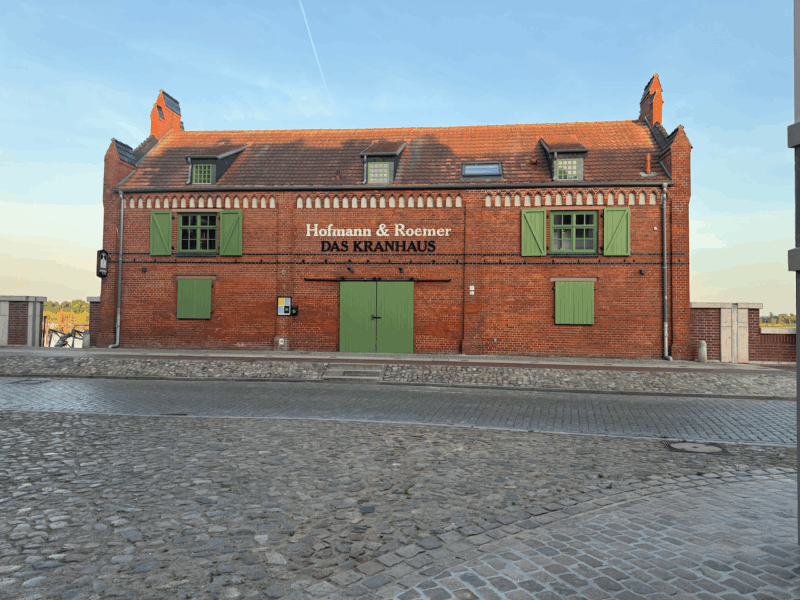

Das Kranhaus
Mietfreier Start möglich
Industrieküche bereits vorhanden
Volle Freiheit beim Interior & Einkauf
Besitzer will einen lebendigen Ort
Coworking im Obergeschoss angedacht
Stil-Übereinstimmung: identische Ideen
Plenum · 25. April 2026 · Wittenberge

Meilenstein
Das Kranhaus — die beste Location der Stadt. Wir haben grünes Licht.
Mietfreier Start möglich
Industrieküche bereits vorhanden
Volle Freiheit beim Interior & Einkauf
Besitzer will einen lebendigen Ort
Coworking im Obergeschoss angedacht
Stil-Übereinstimmung: identische Ideen
Heute Abend: Absichtserklärungen ausfüllen — damit wir wissen, wo wir wirklich stehen.
Alles zahlt heute auf Phase 1 ein — damit wir am 8. Juni gründen können.
Unser Vorschlag: 8. Juni 2026 · 18 Uhr · Kranhaus
Satzung wird beschlossen und persönlich unterschrieben
Vorstand und Aufsichtsrat werden gewählt
Gründungsprotokoll wird erstellt
Im Nachgang: Anmeldung beim Genossenschaftsregister
Satzung muss persönlich unterzeichnet werden — keine Vollmacht
Wer nicht da ist, ist kein Gründungsmitglied (späterer Beitritt bleibt möglich)
Starke Kapitalbasis ab Tag 1
Du wählst Vorstand & Aufsichtsrat mit
Das Team, das den Laden führt — und sich traut, Verantwortung zu übernehmen. Vorstand heißt „Hut auf", nicht „alles allein". Der Laden lebt davon, dass alle mit anpacken.
Führt die Genossenschaft, vertritt sie nach außen
Drei Ressorts: Finanzen · Betrieb · Mitgliederbetreuung
Aufwand ~2–4 Stunden pro Woche
Anfangs ehrenamtlich — perspektivisch bezahlt, wenn's läuft
Persönliche Haftung bei grober Pflichtverletzung
… und hoffentlich bald mehr.
Wir wollen den Vorstand vor dem 8. Juni gemeinsam zusammenstellen — für guten Teamfit. Die Wahl bleibt offen, weitere Kandidat:innen willkommen.
Interesse? Mail an orga@machbar-wittenberge.de bis 15. Mai 2026 — dann melden wir uns für ein Kennenlernen.
Der zweite Blick. Der Aufsichtsrat schaut dem Vorstand über die Schulter, stellt die unbequemen Fragen — und denkt mit. Ab 20 Mitgliedern gesetzlich Pflicht, für uns aber sowieso richtig.
Kontrolliert den Vorstand, prüft Jahresabschluss
Think-Partner für strategische Fragen
Darf nicht gleichzeitig Vorstand sein
Typisch: quartalsweise Sitzungen
Deutlich weniger Aufwand als Vorstand — ehrenamtlich
… und hoffentlich bald mehr.
Gleicher Prozess wie beim Vorstand: Wir wollen auch den Aufsichtsrat vor dem 8. Juni zusammenstellen. Die Wahl bleibt offen.
Interesse? Mail an orga@machbar-wittenberge.de bis 15. Mai 2026 — wir kommen auf dich zu.
Mit dem Kranhaus haben wir endlich eine Geschichte, die sich erzählen lässt. Jeder Artikel, jedes Gespräch ist Aufmerksamkeit — und Aufmerksamkeit wird zu neuen Genoss:innen.
Julia von der MAZ macht den Anfang. Weitere Medien folgen — Christian koordiniert.
Bock dabei zu sein? Kurze Mail an christian@elblandwerker.de — das reicht. Er meldet sich, sobald es konkret wird.
Zwei Tage Bierwagen auf dem Festival, 50/50 mit dem Kulturkombinat. Unsere erste öffentliche Aktion. 10 von 12 Schichtplätzen sind voll — wir suchen noch zwei.
Wer kann am 30./31. Mai? Zwei Schichten, zwei Hände — jetzt melden, nicht später.
Wir teilen uns in drei Arbeitsgruppen auf. Jede Gruppe brainstormt 20 Minuten — dann kommen wir wieder zusammen.
Was muss gemacht werden?
Wer bringt handwerkliche Skills?
Zeitplan & Material
Was können wir selber machen?
Schichten konkret aufteilen
Getränke & Lieferanten
Kasse & Abrechnung
Opening Night planen
Wer kennt noch Interessierte?
Wie kommunizieren wir nach außen?
Ziel: 60 bis 8. Juni
Presse koordinieren
Jede Gruppe stellt eine Idee vor
Wer übernimmt den Hut pro Gruppe?
Nächster Termin pro Arbeitsgruppe
Absichtserklärungen abgeben
Gründungstermin
8. Juni 2026 · 18:00 Uhr
Nächstes Plenum
23. Mai 2026 · 17:00 Uhr
Nur falls heute gefragt: So stellen wir uns den laufenden Betrieb ab September vor. Details klärt die Arbeitsgruppe „Betrieb".
Fr & Sa, 19–01 Uhr → je zwei Schichten pro Abend. Feinplanung in der Gruppe „Betrieb".